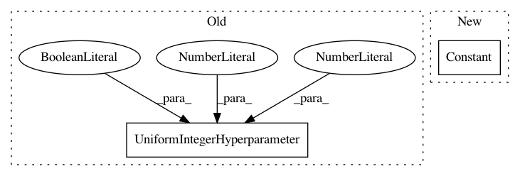

84ac1e439158fed286a8b6ef8de3ae8826575f85,autosklearn/pipeline/components/regression/gradient_boosting.py,GradientBoosting,get_hyperparameter_search_space,#Any#,123
Before Change
"n_estimators", 50, 500, default_value=100)
max_depth = UniformIntegerHyperparameter(
name="max_depth", lower=1, upper=10, default_value=3)
min_samples_split = UniformIntegerHyperparameter(
name="min_samples_split", lower=2, upper=20, default_value=2, log=False)
min_samples_leaf = UniformIntegerHyperparameter(
name="min_samples_leaf", lower=1, upper=20, default_value=1, log=False)
min_weight_fraction_leaf = UnParametrizedHyperparameter(
"min_weight_fraction_leaf", 0.)
After Change
name="max_depth", value="None")
max_leaf_nodes = UniformIntegerHyperparameter(
name="max_leaf_nodes", lower=3, upper=2047, default_value=31, log=True)
max_bins = Constant("max_bins", 256)
l2_regularization = UniformFloatHyperparameter(
name="l2_regularization", lower=1E-10, upper=1, default_value=1E-10, log=True)
early_stop = CategoricalHyperparameter(
name="early_stop", choices=["off", "train", "valid"], default_value="off")
In pattern: SUPERPATTERN
Frequency: 3
Non-data size: 2
Instances
Project Name: automl/auto-sklearn
Commit Name: 84ac1e439158fed286a8b6ef8de3ae8826575f85
Time: 2019-08-05
Author: guilherme.miotto@gmail.com
File Name: autosklearn/pipeline/components/regression/gradient_boosting.py
Class Name: GradientBoosting
Method Name: get_hyperparameter_search_space
Project Name: automl/auto-sklearn
Commit Name: c94e251303067f2bf0ed647108a8f70b58d1006a
Time: 2015-01-11
Author: feurerm@informatik.uni-freiburg.de
File Name: AutoSklearn/components/classification/gradient_boosting.py
Class Name: GradientBoostingClassifier
Method Name: get_hyperparameter_search_space
Project Name: automl/auto-sklearn
Commit Name: c94e251303067f2bf0ed647108a8f70b58d1006a
Time: 2015-01-11
Author: feurerm@informatik.uni-freiburg.de
File Name: AutoSklearn/components/regression/random_forest.py
Class Name: RandomForest
Method Name: get_hyperparameter_search_space